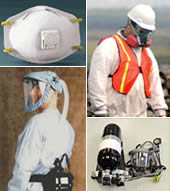

RESPIRATORS
 ShareCompartir
ShareCompartir

Respirator Concern?
Contact NPPTL PPEConcerns@cdc.gov
Respirators protect the user in two basic ways. The first is by the removal of contaminants from the air. Respirators of this type include particulate respirators, which filter out airborne particles; and "gas masks” which filter out chemicals and gases. Other respirators protect by supplying clean respirable air from another source. Respirators that fall into this category include airline respirators, which use compressed air from a remote source; and self-contained breathing apparatus (SCBA), which include their own air supply.
Respirators should only be used when engineering control systems are not feasible. Engineering control systems, such as adequate ventilation or scrubbing of contaminants are the preferred control methods for reducing worker exposures.
NIOSH issues recommendations for respirator use. Industrial type approvals are in accordance to the NIOSH federal respiratory regulations 42 CFR Part 84. Development of respirator standards are in concert with various partners from government and industry.
Respirator Trusted-Source Information Page
This respirator information may be regarded as a trusted source to verify which filtering facepiece respirators are approved by NIOSH, how to get them and how to use them.
NIOSH Publications
What’s special about Chemical, Biological, Radiological, and Nuclear (CBRN) air-purifying respirators (APR)?
DHHS (NIOSH) Publication No. 2013-157 (September 2013)
The guidance recommended in this fact sheet will help respiratory protection program administrators, managers, and air-purifying respirator (APR) wearers understand the special features of a NIOSH-approved Chemical, Biological, Radiological, and Nuclear (CBRN) APR.
What’s special about Chemical, Biological, Radiological, and Nuclear (CBRN) powered air-purifying respirators (PAPR)?
DHHS (NIOSH) Publication No. 2013-156 (September 2013)
This guidance will help respiratory protection program administrators, managers, and powered air-purifying respirator (PAPR) wearers understand the special features of a NIOSH-approved chemical, biological, radiological, and nuclear (CBRN) PAPR.
Fact Sheet: Getting optimal performance from a powered air-purifying respirator (PAPR) depends on the condition of its battery!
DHHS (NIOSH) Publication No. 2013-146 (September 2013)
Español
The guidance in this fact sheet will help respiratory protection program administrators, managers, and powered air-purifying respirator (PAPR) wearers understand the importance of a PAPR’s battery in assuring effective respiratory protection.
Respirator Awareness: Your Health May Depend On It
NIOSH Publication No. 2013-138 (June 2013)
Español
One of the occupational hazards in the healthcare setting is the airborne transmission of certain infectious diseases. The potential of exposure is not limited to physicians, nurses, and support personnel in direct patient care. It extends to those delivering food, cleaning patient rooms, and performing maintenance. Anyone working in areas with patients infected with airborne-transmissible diseases is potentially at risk.
Fact Sheet: Understanding the Breathing Gas Capacities (ratings) of Escape Respirators for Mineworker Use
DHHS (NIOSH) Publication No. 2013-148 (May 2013)
This information will help workers understand the meaning of breathing gas capacity of a jointly approved National Institute for Occupational Safety and Health (NIOSH) and Mine Safety and Health Administration (MSHA) closed-circuit escape respirator (CCER). Understanding the uses and limitations of the CCER is important in planning for an escape during a mine emergency.
Fact Sheet - NIOSH Approval Labels - Key Information to Protect Yourself
DHHS (NIOSH) Publication No. 2011-179 (May 2011)
NIOSHspecifies minimum approval requirements for respiratory protective devices in Title 42 Code of Federal Regulations (CFR) Part 84. NIOSH reviews respirator approval applications, which contain technical specifications, drawings, and other related information. NIOSH also inspects, examines and tests the respirators to determine that the applicable requirements are met for individual, completely assembled respirators, as described in §84.30(a).
NIOSH Policy Statement: Respiratory Protection Recommendations for Airborne Exposures to Crystalline Silica
DHHS (NIOSH) Publication No. 2008-140 (July 2008)
En Español
NIOSH recommends the use of half-facepiece particulate respirators with N95 or better filters for airborne exposures to crystalline silica at concentrations less than or equal to 0.5 mg/m3.
Attention Emergency Responders: Guidance on Emergency Responder Personal Protective Equipment (PPE) for Response to CBRN Terrorism Incidents
DHHS (NIOSH) Publication No. 2008-132 (June 2008)
NIOSH Pocket Guide to Chemical Hazards
Exposure limits, Respirator Recommendations, First Aid, more...
The Pocket Guide is a source of general industrial hygiene information on several hundred chemicals/classes found in the work environment. Key data provided for each chemical/substance includes name (including synonyms/trade names), structure/formula, CAS/RTECS Numbers, DOT ID, conversion factors, exposure limits, IDLH, chemical and physical properties, measurement methods, personal protection, respirator recommendations, symptoms, and first aid.
NIOSH Respirator Selection Logic 2004
DHHS (NIOSH) Publication No. 2005-100 (October 2004)
Provides a process that respirator program administrators can use to select appropriate respirators to protect workers in specific workplaces. Replaces the NIOSH Respirator Decision Logic (NIOSH Publication No. 87-108), and includes information on N95 through P100 particulate respirators.
Respirators: Your TB Defense / TB Respiratory Protection: Administrator's Review
DHHS (NIOSH) Publication No. 2002-114d (DVD)
Includes the programs 'Respirators: Your TB Defense', 'TB Respiratory Protection: Administrator's Review', and written materials in electronic format.
TB Respiratory Protection Program in Health Care Facilities
DHHS (NIOSH) Publication No. 99-143 (September 1999)
This manual is designed to serve as a practical guide for those individuals responsible for initiating and running a TB respiratory protection program in health care facilities.
NIOSH Guide to the Selection and Use of Particulate Respirators Certified Under 42 CFR 84
DHHS (NIOSH) Publication No. 96-101 (January 1996)
Explains the federal regulation for certifying air-purifying particulate respirators [42 CFR Part 84] and provides valuable information for selecting and using respirators certified by NIOSH.
Medical Aspects of Wearing Respirators [PDF - 1.61 MB]
DHHS (NIOSH) Publication No. 91-119
Appendix H — Criteria for a Recommended Standard: Occupational Exposure to Ethylene Glycol Monomethyl Ether, Ethylene Glycol Monoethyl Ether, and Their Acetates.
NIOSH Guide to Industrial Respiratory Protection
DHHS (NIOSH) Publication No. 87-116 (September 1987)
Covers types of Respirators, guidance for selection and use, user notices, more....
NIOSH Respirator Decision Logic
DHHS (NIOSH) Publication No. 87-108 (May 1987)
Includes criteria for selection, restrictions and requirements, decision logic sequence, more...
NIOSH Factsheets
Fact Sheet: Use of Aftermarket Replacement Component Parts for NIOSH-Approved Respirators
Worker safety can be compromised by using replacement component parts or accessories that are not NIOSH-approved for the specific respirator.
Fact Sheet: What You Should Know In Deciding Whether to Buy Escape Hoods, Gas Masks, or Other Respirators for Preparedness at Home and Work
Provides information on what respirators are, how they work, and what is needed for a respirator to provide adequate protection.
Understanding Respiratory Protection Against SARS
Q & A about respirators and SARS, including what types of respiratory protection should be used by health care workers and others to protect against SARS.
Respirator Resources
Respirator Usage in Private Sector Firms, 2001
NIOSH and U.S. DOL BLS Publication
NIOSH and the Bureau of Labor Statistics conducted a voluntary survey of U.S. employers regarding the use of respirators. The findings are intended to provide information to develop interventions and to increase the frequency and effectiveness of respirator use in the workplace.
NIOSH-Approved Particulate Filtering Facepieces Respirators
This site provides a listing of NIOSH-approved particulate filtering facepiece respirators. This type of air-purifying respirators protects by filtering particles out of the air the user is breathing.
NIOSH Federal Respiratory Regulations 42 CFR Part 84
Cleaning and Maintenance
Suggested Respirator Cleaning and Sanitation Procedures
Guidance for selecting cleaning equipment and supplies, procedures for respirator maintenance.
Certification
Certified Equipment List
The Certified Equipment List (CEL) is a database of all certified respirators.
Certification Program Support for Respirator Manufacturers
Centralized support services for respirator manufacturers. Includes lists of certification projects that are currently being processed, applications, application procedures, logos, more...
Technical Summary: Respiratory Protective Devices, 42 CFR Part 84
Addresses NIOSH and the Department of Labor/Mine Safety and Health Administration (MSHA) certification requirements for respiratory protective devices.
Respirator Standards
Standards in Rulemaking Process
Full Text: Respiratory Protective Devices, 42 CFR Part 84
Includes the test requirements that a filter and respirator must meet for NIOSH to grant an approval to a manufacturer.
User Notices
Respirator User Notice Issued December 23, 2013: Voluntary Rescission of Approval number TC-13F-0239 (CSE SR-100 Self-Contained, Self-Rescuer)
Respirator User Notice Issued November 27, 2013: Chemical Warfare Agent (CWA) Testing for NIOSH CBRN Respirator Approvals
H1N1 Resources
Occupational Health Issues Associated with H1N1 Virus - Updated 10/14/09
CDC revises Interim Guidance on Infection Control Measures for 2009 H1N1 Influenza in Healthcare Settings, Including Protection of Healthcare Personnel.
Questions & Answers Regarding Respiratory Protection for Infection Control Measures for 2009 H1N1 Influenza among Healthcare Personnel - Updated 10/14/2009
2009 H1N1 Influenza Virus - Swine Influenza (Flu)
The National Institute for Occupational Safety and Health (NIOSH) is coordinating with other parts of the U.S. Centers for Disease Control and Prevention (CDC) to address national health needs associated with preventing the spread of swine flu and providing information to workers and employers. NIOSH provides technical guidance for workers, including health-care and transportation workers, for whom job-related questions about exposure or infection may be an occupational concern.
Other Resources
OSHA Web site:
- Respiratory Protection
- Respiratory Protection Standards - Training and Reference Materials
- Deaths Involving the Inadvertent Connection of Air-line Respirators to Inert Gas Supplies This Safety and Health Information Bulletin contains information about fatalities that have occurred due to the inadvertent connection of air-line respirators to inert gas supplies.
Respirator Use in Health Care Workplaces - a Toolkit for California Respirator Program Administrators
Evaluations of respirator use in California hospitals conducted during the 2009 H1N1 pandemic and the 2010-11 influenza season showed that some hospitals could use help to improve the effectiveness of their respirator programs. The Toolkit was developed to provide useful tools and resources for California hospitals to reinforce and strengthen the respiratory protection programs. The guide covers key requirements of the Cal/OSHA Respiratory Protection and Aerosol Transmissible Diseases standards, guidance on developing and evaluating a respiratory protection program, and information on the selection and use of respirators. The tools and resources are now available through links within the electronic version of the guide itself. While directed toward California, the tools provide a useful resource for the nation as NIOSH NPPTL continues to work toward developing more generalized tools.
- Page last reviewed: August 24, 2016
- Page last updated: March 16, 2016
- Content source:
- National Institute for Occupational Safety and Health National Personal Protective Technology Laboratory